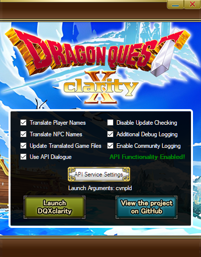

The two main translation tools that exist for Dragon Quest X are DQXclarity and Ahkmon. These tools, when working in conjunction, makes Dragon Quest X incredibly easy to access despite its language barrier.
Through manipulation and injection of translated strings, Clarity replaces Japanese text in-game with English translations, dynamically altering how the game displays text to provide clear and concise translations for dialogue spoken by a majority of NPCs, and provides on the fly translations for player names, monster names, and NPC names. Clarity has essentially superceded ahkmon's functionality, making ahkmon's use optional.
Using available online translation API services, Ahkmon produces machine-translated interpretations of dialogue on an overlay, allowing players to fully experience the game's dialogue in it's entirety without the localization power of a full translation team. Using API translation services allows for quick, high-volume requests of translations that keep up with a player's momentum as they trudge through dialogue in-game. Ahkmon is essentially a precursor to Clarity, so it's not necessary to use in conjuction with Clarity aside from a few niche features that Clarity has yet to implement. If you'd like to know what exactly these niche features are, check out the FAQ .
We highly recommend you take advantage of these tools as they're available.
Obtaining a DeepL API Key
NOTICE: CURRENTLY, DEEPL IS ONLY AVAILABLE IN THE EU, UK, US, CANADA, AND JAPAN. A CREDIT CARD IS REQUIRED FOR VERIFICATION PURPOSES. YOU WILL NOT BE CHARGED, IT'S ONLY TO VALIDATE NEW MEMBERS WHO USE THEIR API SERVICE.
A majority of Dragon Quest X's NPC dialogue is sent via their server, so it must be translated dynamically through a translation service. To use DeepL as this service, you must first sign up for a DeepL account in order to obtain an API key. If you're uncomfortable providing these details, you may consider using the Google Translate API as an alternative to DeepL (detailed here), however, DeepL is widely accepted by the community to be superior, and will be the only method covered in this guide (as of now). You can get more information on their GitHub or in the Discord server posted in the introduction.
Go to DeepL's Site and click "Sign Up" under the sub-menu in the top right.
On this page, scroll down and click on "For developers", then click "Sign up for free" where indicated.

Continue with the rest of the sign-up process. Once you've completed the sign up with accurate information and have been verified, Click your name in the top right and select "Account".
Click on the Account tab.
Scroll down the page and look for your Authentication Key. Copy this somewhere.

Congratulations! You've completed the hardest part of setting up Ahkmon and Clarity's translation.
IMPORTANT NOTE: If you choose not to use an API, a majority of NPC dialogue in Dragon Quest X will remain in Japanese. You have been warned.
Installing DQXclarity
Go to DQXclarity's GitHub page and download the latest release from the releases tab. Download the dqxclarity.zip file. Do not download the source code files as they will not work.

READ THE README. OUR ABILITY TO HELP YOU IF SOMETHING BREAKS DEPENDS ON IT.
Extract dqxclarity.zip anywhere except the Program Files folder and locate DQXclarity.exe

Run DQXclarity.exe, which will bring up this GUI.
There are multiple options here that function as follows:
-
Translate Player Names: Allows Clarity to dynamically translate visible player names.
-
Translate NPC Names: Allows Clarity to dynamically translate visible NPC and monster names.
-
Enable Community Logging: Logs useful information about data that is loaded while playing Dragon Quest X. This is useful for discovering new files the translators do not have yet. This is appreciated to leave on for that purpose, but it is not required.
-
Disable Update Checking: Disables Clarity checking for updates and stops custom translation files from being updated.
-
Enable Debug Logging: Logs useful debug information to the console. Only really needed to diagnose/troubleshoot problems, otherwise you can just leave this unchecked.
-
API Service Settings: This is where you can set up a translation API (Either DeepL or Google Translate API), which will inject English translations directly into game dialogue. See the section above how to get an API Key! Once you have an API key, fill in the appropriate box and check the box of the service you're using (do not check both.) If your API key is valid, you will see API Functionality Enabled! displayed.
-
Install Python: If you have never used Clarity before, you must first install Python. You can do this manually with this button, or the Python installer will automatically start upon launching Clarity.
For the best English experience, it's recommended to check Translate Player Names, Translate NPC Names, and have API Functionality Enabled. Please consider also having the Community Logger option checked, too.
Once you are satisfied with your Clarity settings, run Dragon Quest X. Don't launch Clarity just yet. The game will take a few seconds to launch. If the game is already open, read on.
If you are a trial player, you will see a screen similar to this upon launching the game. Don't press anything yet! Read below to see the next step.
If you are NOT a trial player, this is what you will see upon launching the game. Don't press anything yet! Read below to see the next step.
Now you'll want to launch Clarity. This will bring up a
Powershell window. The first time you launch it, it will go
through a process of creating necessary folders. Do not
touch the game nor the Powershell window until Clarity
finishes. If you do not have Python installed, the Python
installer will automatically start. Go through the installation
prompts. Afterwards,
Clarity will transition into translating the
game automatically and will notify you when it's
finished. You'll see following message in the Powershell
window once it's complete.
Keep the Powershell window minimized and enjoy Dragon Quest X!
You can now press Enter to head to the main login screen.
Please note that you will need to run Clarity again in
this fashion each time you boot up the game.
NOTE: If Clarity's Powershell window is
automatically closing itself before finishing, PLEASE CAREFULLY
READ THE TROUBLESHOOTING SECTION DETAILED
HERE.
Setting Up Ahkmon (optional)
Go to Ahkmon's GitHub page and download the latest release from the releases tab.
READ THE README. OUR ABILITY TO HELP YOU IF SOMETHING BREAKS DEPENDS ON IT.
Extract ahkmon.zip and locate ahkmon.exe
Open ahkmon.exe and navigate to the Translate APIs tab.

If you're using DeepL, check "Use DeepL Translate" and paste your Authentication Key in the field. If you're using Google Translate, do the same for those fields instead. Do not check "use DeepL Pro APIs" unless you are PAYING for DeepL Pro.
Adjust the rest of Ahkmon's settings accordingly. (These are what I use for a 1080p resolution.)